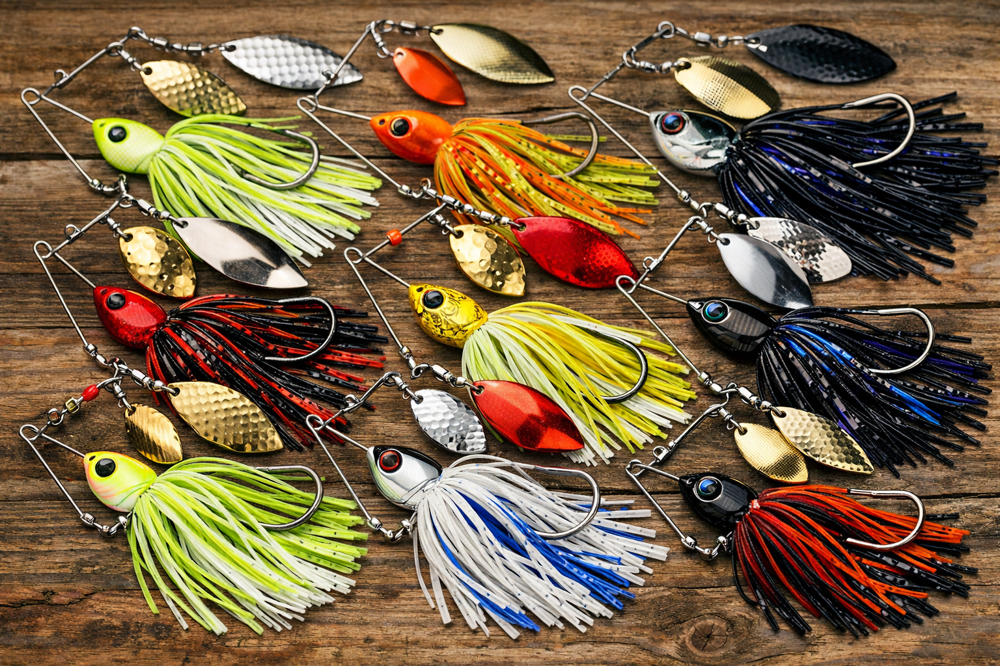
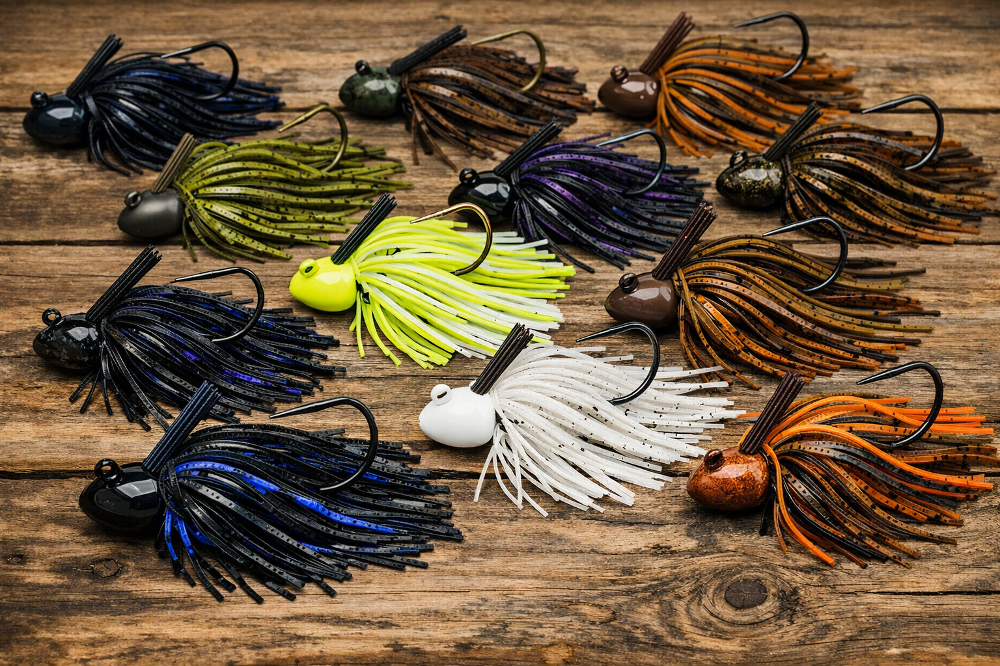
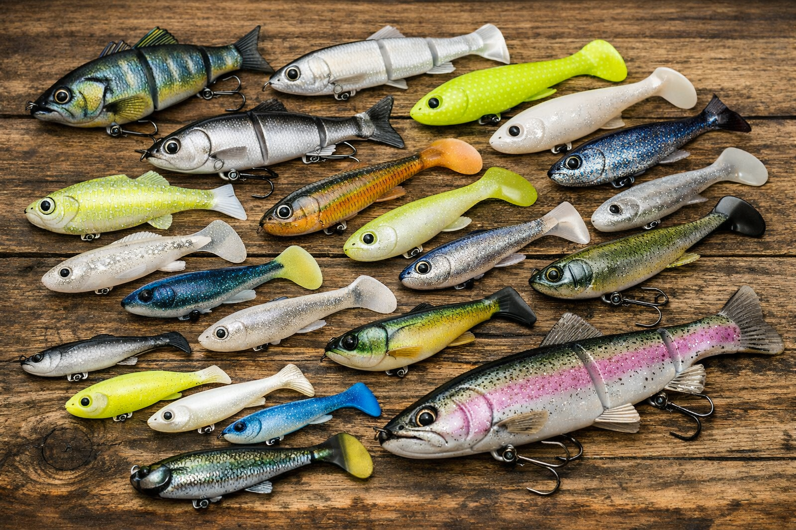
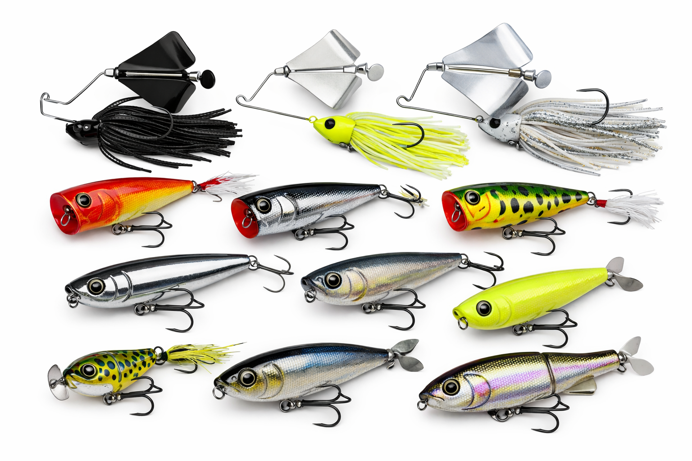

Soft baits are the ultimate bait for beginners, and they work the most efficiently and probably has the highest success rate of any bait. They are made of soft plastics (lol) and they smell sort of like salt and guts. This lures in the fish. The way you put it on the line is by hooking it through the mouth of it, then turning it so the hook sticks up out of it.
Soft Plastics

Crankbaits

Crankbaits are made of hard plastic, and the main purpose of them is to try to trigger a reaction strike from fish like bass, whaleye and pike. They are designed to imitate baitfish, and they are one of the most successful baits to use. To attach it, you slip the line through the small hoop, and use a strong knot.
Spinner Baits

Spinnerbaits are another super popular bass lure, but they are different from others, as they rely on flash and vibration instead of diving action. This bait has one or more arms with spinning metal blades, and a weighted head to weigh it down. This style mimics the flash from scales, and makes the fish feel the vibrations in murky water.
Jigs

Jigs are one of the most used lures to catch big fish, and they are super important and useful if you know how to use them. A jig is basically a weighted head, a skirt, and is often paire with a soft plastic bait. Jigs move differently to crankbaits, as they don't swim on the bottom, the will pulse, crawl or hop on the bottom, and the trailer adds bulk and realism.
Swimbaits

Swimbaits are the realism king of baits, as their whole purpose is to mimic the actions of a baitfish. A swimbait can be a hard or soft plastic, that has a natural swimming motion when you lure or move the line. As it moves, it will glide in the water, with the tail flipping from side to side, like a fish. You can use the softplastic technique to attach, or the weighted head, to make it dip down and up when you move it.
Topwater

Topwater baits are the most exciting bait to fish with, as you see all of the action up close on the top of the water. These baits are mostly comprised of injured topwater animals, like broken baitfish, bugs or frogs. These trigger agressive strikes, due to the bass thinking it is a wounded and easy target.